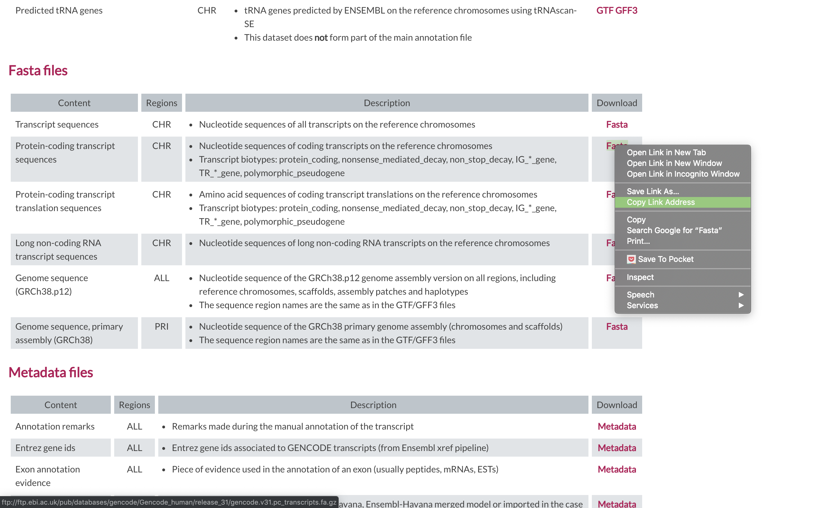

Alignment using Salmon
Salmon Aligner
Salmon is a tool for quantifying the expression of transcripts using RNA-seq data. Salmon uses new algorithms (specifically, coupling the concept of quasi-mapping with a two-phase inference procedure) to provide accurate expression estimates very quickly (i.e. wicked-fast) and while using little memory. Salmon performs its inference using an expressive and realistic model of RNA-seq data that takes into account experimental attributes and biases commonly observed in real RNA-seq data.
We first need to index the reference (In this case the transcriptome)
1. First lets make sure we are where we are supposed to be and that the References directory is available.
cd /share/workshop/$USER/rnaseq_example
2. To align our data we will need the transcriptome (fasta) and annotation (gtf) for human. There are many places to find them, but we are going to get it from the GENCODE.
We need to first get the urls for the and protein coding genes. For RNAseq we want to use the protein coding transcript sequences and basic gene annotation. At the time of this workshop the current version of GENCODE is 31. You will want to update the scripts to use the current version.


3. Lets take a look at the help docs for salmon and its subcommands as well:
module load salmon
salamon -h
salmon index -h
4. First we need to index the transcriptome for STAR. Lets pull down a slurm script to index the human GENCODE version of the transcriptome.
wget https://raw.githubusercontent.com/ucdavis-bioinformatics-training/2019_August_UCD_mRNAseq_Workshop/master/scripts/salmon_index.slurm
less salmon_index.slurm
Press ‘q’ to exit.
- The script changes into the References directory.
- It uses wget to download the transcript fasta file from GENCODE.
- Uncompresses it using gunzip.
- Run Salmon indexing, using the “gencode” flag to parse the GENCODE file properly, and outputting to a new directory called “salmon_gencode.v31.index”.
Run salmon indexing when ready.
sbatch salmon_index.slurm
This step does not take long, about 15 minutes. You can look at the salmon documentation while you wait. All of the output files will be written to the salmon_gencode.v31.index directory.
IF for some reason it didn’t finish, is corrupted, or you missed the session, you can copy over a completed copy.
cp -r /share/biocore/workshops/2019_August_RNAseq/References/salmon_gencode.v31.index /share/workshop/$USER/rnaseq_example/References/
Alignments
1. We are now ready to try an alignment:
cd /share/workshop/$USER/rnaseq_example/HTS_testing
Then run the salmon quant (quantify transcripts) command
module load salmon
salmon quant --help-reads
salmon quant \
--threads 8 \
--index ../References/salmon_gencode.v31.index \
--libType A \
--validateMappings \
--geneMap ../References/gencode.v31.primary_assembly.annotation.gtf \
--output SampleAC1.salmon \
-1 SampleAC1.streamed_R1.fastq.gz \
-2 SampleAC1.streamed_R2.fastq.gz
In the command, we are telling salmon to quantify reads with libtype ‘auto’ (libtype) on a gene level (‘–geneMap’), the folder for all the output files will be SampleAC1.salmon, and finally, the input file pair.
Running Salmon on the experiment
1. We can now run Salmon across all samples on the real data using a SLURM script, salmon.slurm, that we should take a look at now.
cd /share/workshop/$USER/rnaseq_example # We'll run this from the main directory
wget https://raw.githubusercontent.com/ucdavis-bioinformatics-training/2019_August_UCD_mRNAseq_Workshop/master/scripts/salmon.slurm
less salmon.slurm
When you are done, type “q” to exit.
- Loads the salmon module and then runs salmon in “quant” mode to quantify (i.e. count) the reads aligning to transcripts. Salmon uses the annotation GTF file to roll up the transcript counts into gene-level counts.
- The script specifies the output directory (02-Salmon_alignment), the samples file (samples.txt), the reference that we just indexed, and the annotation that we downloaded.
- Creates the output directory.
- It then defines the filenames for the forward and reverse reads (R1 and R2).
2. After looking at the script, lets run it.
sbatch salmon.slurm # moment of truth!
We can watch the progress of our task array using the ‘squeue’ command. Takes about 30 minutes to process each sample.
squeue -u msettles # use your username
3. Once the jobs finish, take a look at one of the output files:
cd /share/workshop/$USER/rnaseq_example/02-Salmon_alignment/SampleAC1
head quant.sf
These are the transcript-level counts. Each row describes a single quantification record. The columns have the following interpretation.
- Name — This is the name of the target transcript provided in the input transcript database (FASTA file).
- Length — This is the length of the target transcript in nucleotides.
- EffectiveLength — This is the computed effective length of the target transcript. It takes into account all factors being modeled that will effect the probability of sampling fragments from this transcript, including the fragment length distribution and sequence-specific and gc-fragment bias (if they are being modeled).
- TPM — This is salmon’s estimate of the relative abundance of this transcript in units of Transcripts Per Million (TPM). TPM is the recommended relative abundance measure to use for downstream analysis.
- NumReads — This is salmon’s estimate of the number of reads mapping to each transcript that was quantified. It is an “estimate” insofar as it is the expected number of reads that have originated from each transcript given the structure of the uniquely mapping and multi-mapping reads and the relative abundance estimates for each transcript.
Gene level quantification can be found in the quant.genes.sf file.
Quality Assurance - Mapping statistics as QA/QC.
1. Once your jobs have finished successfully (check the error and out logs like we did in the previous exercise), use a script of ours, salmon_stats.sh to collect the alignment stats. Don’t worry about the script’s contents at the moment; you’ll use very similar commands to create a counts table in the next section. For now:
cd /share/workshop/$USER/rnaseq_example # We'll run this from the main directory
wget https://raw.githubusercontent.com/ucdavis-bioinformatics-training/2019_August_UCD_mRNAseq_Workshop/master/scripts/salmon_stats.sh
module load R
R CMD BATCH salmon_stats.R
2. Transfer summary_salmon_alignments.txt to your computer using scp or winSCP, or copy/paste from cat [sometimes doesn’t work],
In a new shell session on your laptop. NOT logged into tadpole.
mkdir ~/rnaseq_workshop
cd ~/rnaseq_workshop
scp [your_username]@tadpole.genomecenter.ucdavis.edu:/share/workshop/[your_username]/rnaseq_example/summary_alignments.txt .
Its ok of the mkdir command fails (“File exists”) because we aleady created the directory earlier.
Open in excel (or excel like application), and lets review.
The table that this script creates (“alignment_salmon_stats.txt”) can be pulled to your laptop via ‘scp’, or WinSCP, etc., and imported into a spreadsheet. Are all samples behaving similarly? Discuss …
Generating gene level read counts table
1. Similar to STAR, we want to do these steps for ALL of the read count files… and to do that we will be using a ‘for loop’ directly on the command line. First, just run a simple ‘for loop’ that will print out the names of all the files we want to use:
for sample in `cat samples.txt`; do echo ${sample}; done
This command takes all the files that we listed in samples.txt and loops through them, one by one, and for every iteration, assigns the filename to the ‘${sample}’ variable. Also, for every iteration, it runs whatever commands are between the ‘do’ and ‘done’…. and every iteration the value of ‘${sample}’ changes. The semi-colons separate the parts of the loop. The ‘echo’ command just prints the value of $x to the screen… in this case just the filename. For salmon we want to pull the TPM column (column 4) as the best estimate for transcript abundance:
cd /share/workshop/$USER/rnaseq_example
mkdir 03-Counts
mkdir 03-Counts/tmp
for sample in `cat samples.txt`; do \
echo ${sample}
cat 02-Salmon_alignment/${sample}/quant.genes.sf | cut -f4 > 03-Counts/tmp/${sample}.count
done
After this command, there should be a counts file for every sample, in 03-Counts/tmp.
4. Next, we need to get the columns for the final table. Because all of these files are sorted in the exact same order (by gene ID), we can just use the columns from any of the files:
tail 02-Salmon_alignment/SampleAC1/quant.genes.sf | cut -f1 > 03-Counts/tmp/geneids.txt
head 03-Counts/tmp/geneids.txt
Finally, we want to combine all of these columns together using the ‘paste’ command, and put it in a temporary file:
paste 03-Counts/tmp/geneids.txt 03-Counts/tmp/*.count > 03-Counts/tmp/tmp.out
5. The final step is to create a header of sample names and combine it with the temp file. The header is just all of the sample names separated by tabs. And again, since we pasted the columns in sorted order (wildcards automatically sort in order), the columns just need to be in that same order.
We take the samples.txt file and pipe that to the sort (to ensure they are in the same order) and then ‘paste’ command with the ‘-s’ option, which takes a column of values and transposes them into a row, separated by the tab character. And finally, let’s put everything together:
cat <(cat samples.txt | sort | paste -s) 03-Counts/tmp/tmp.out > 03-Counts/rnaseq_salmon_workshop_counts.txt
rm -rf 03-Counts/tmp
head 03-Counts/rnaseq_salmon_workshop_counts.txt
Scripts
slurm script for indexing the genome
shell script for indexing the genome
slurm script for mapping using slurm task array and star
shell script for mapping using bash loop and star.
R script to produce summary mapping table